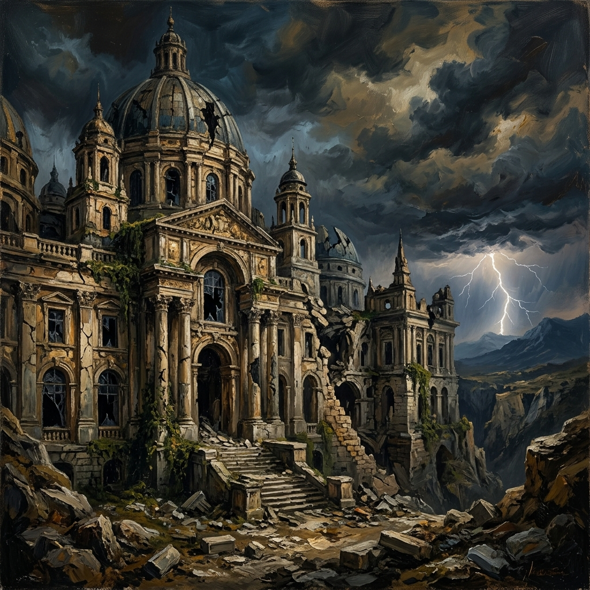
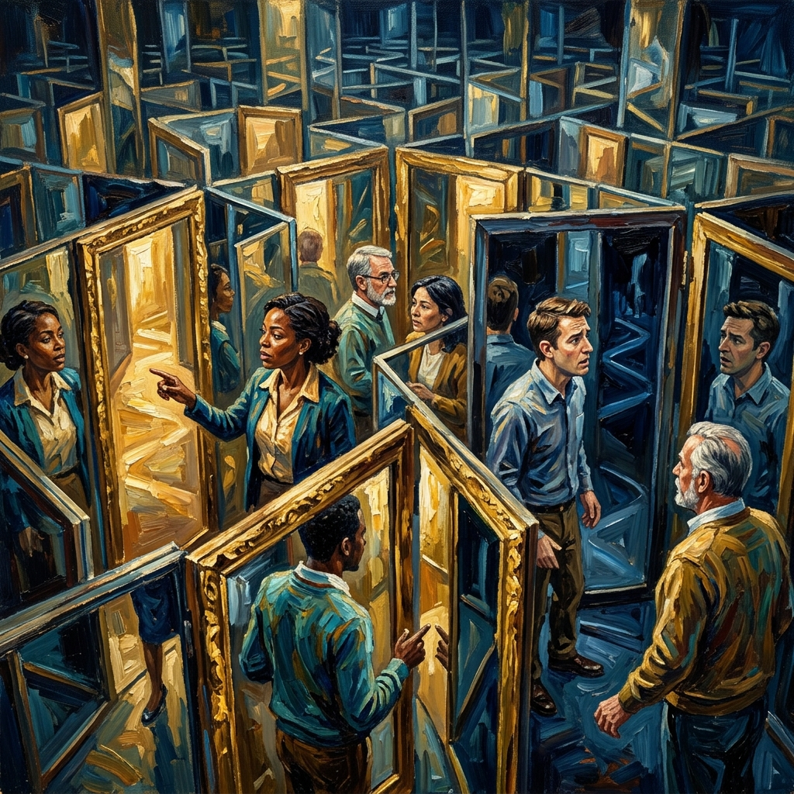
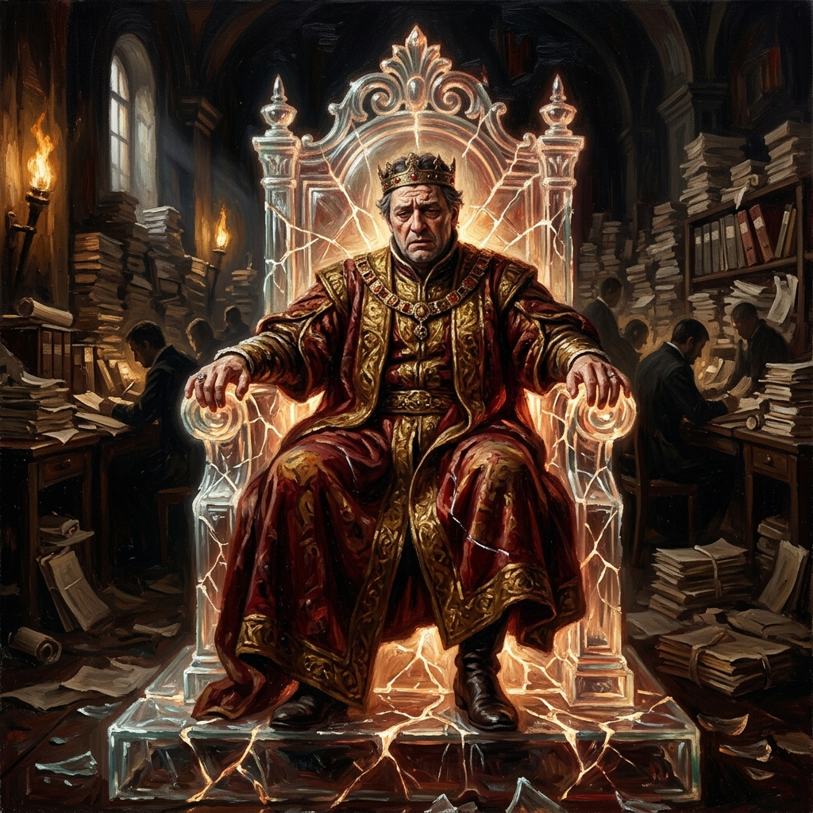
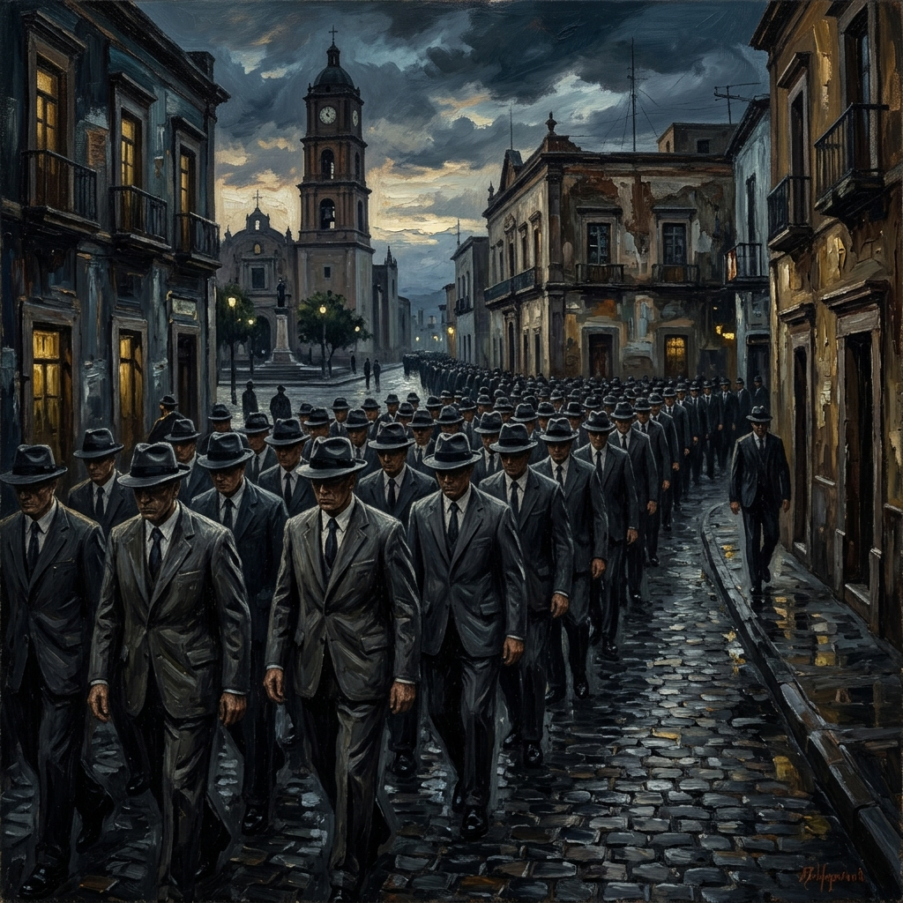
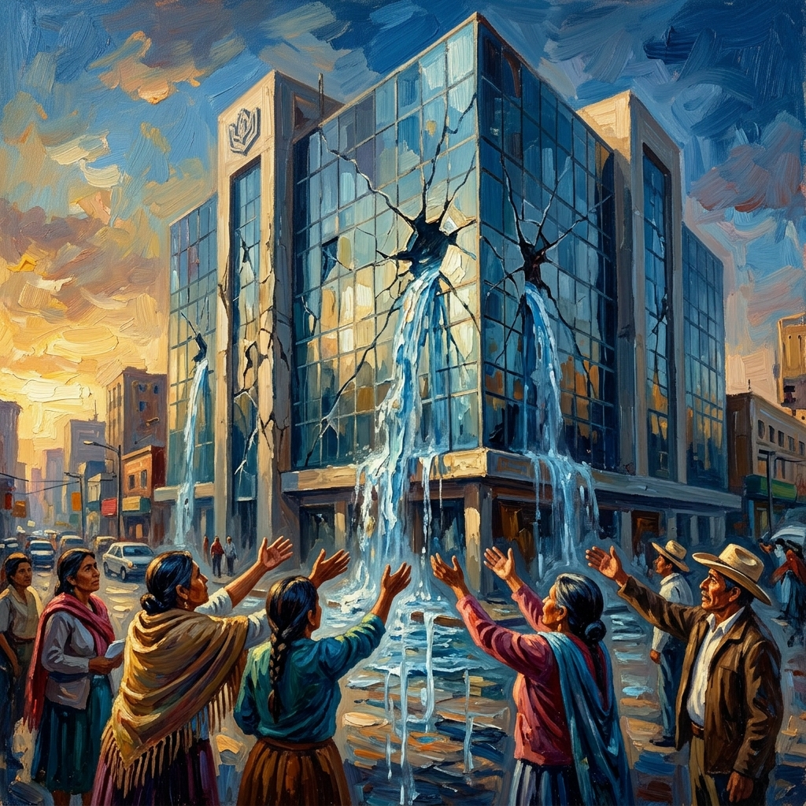
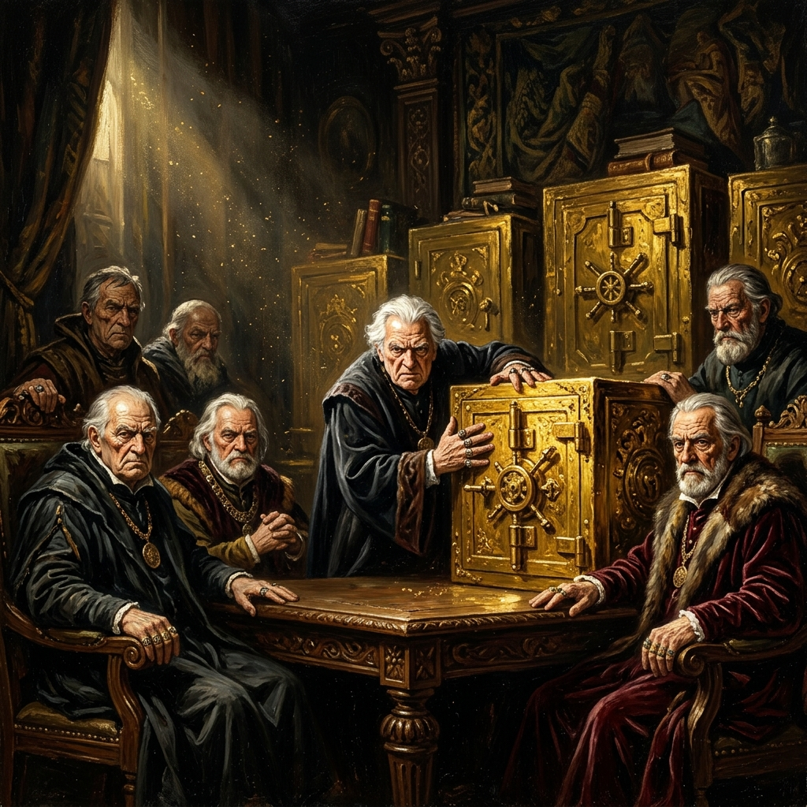
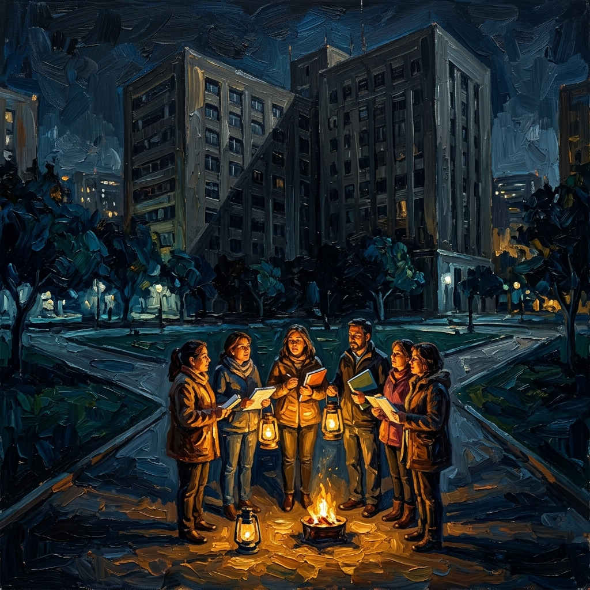
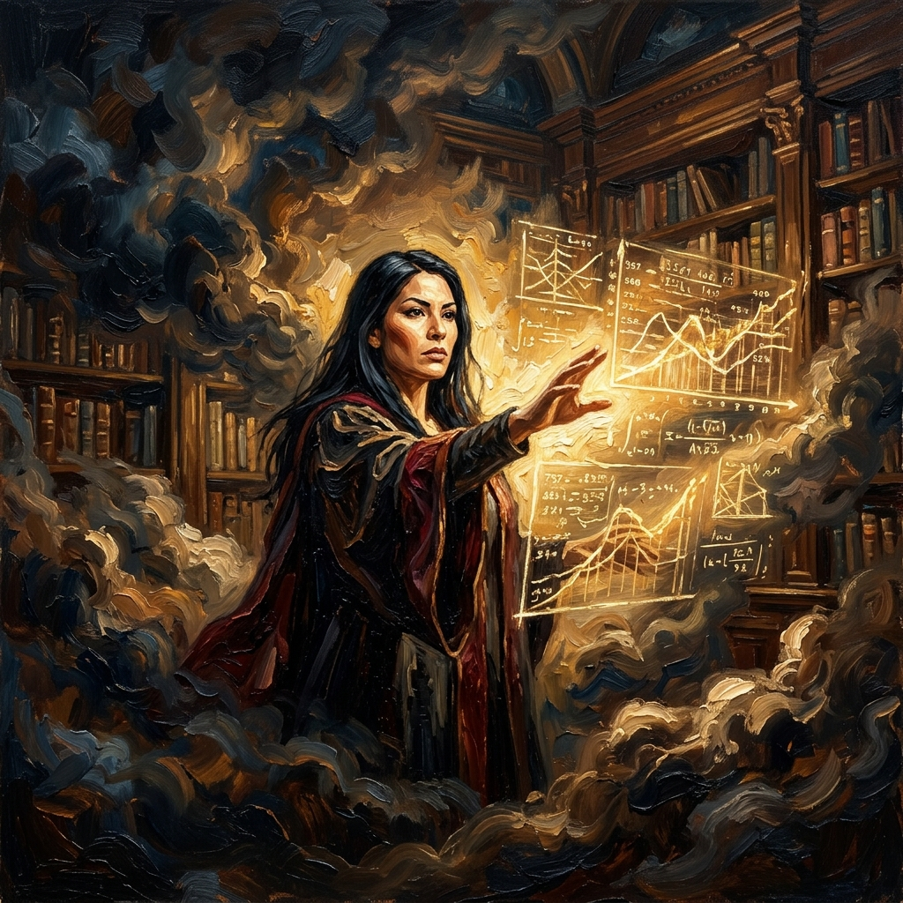
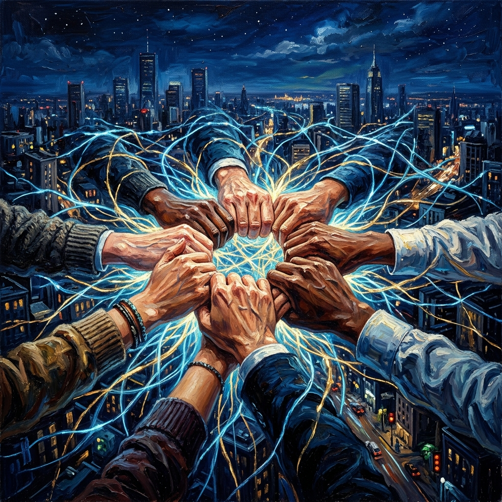
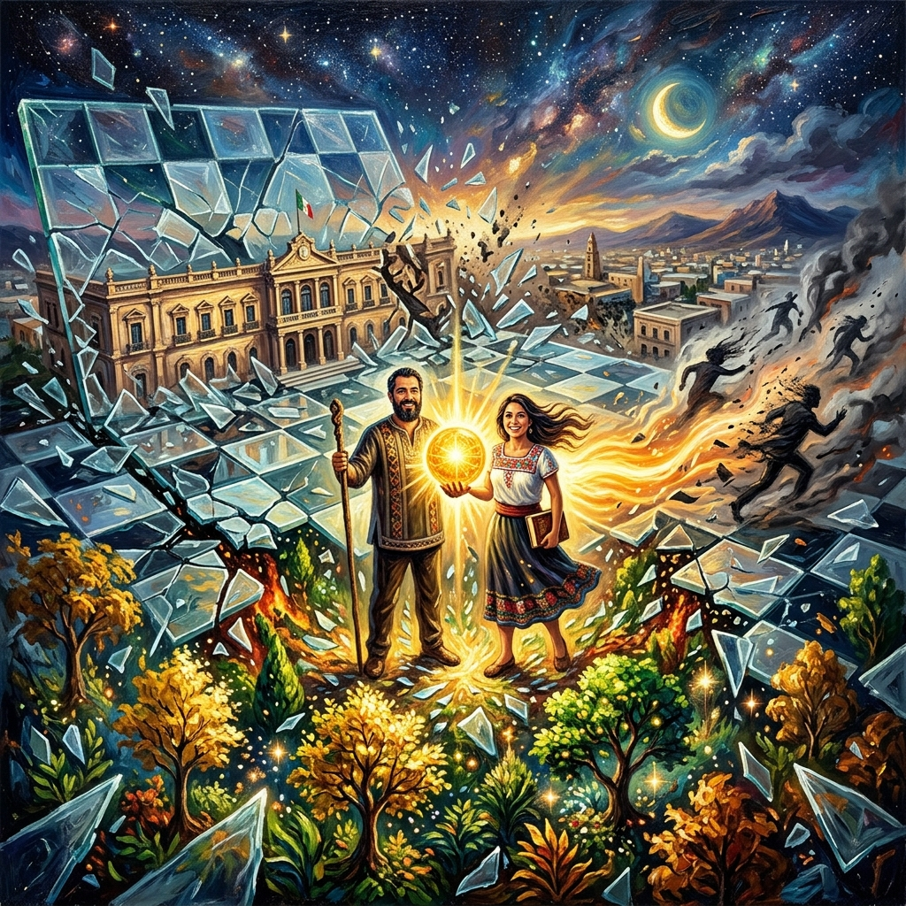

El Tablero de Cristal
Bienvenidos a la fase final de decodificación. Hemos dejado de ser víctimas de un sistema fallido para convertirnos en estrategas. Basándonos en la agnotología y la Teoría de Juegos, este tomo revela por qué la ignorancia ha sido fabricada deliberadamente y cómo la inteligencia magisterial romperá el equilibrio de la sumisión.
"No somos peones del destino; somos los arquitectos del tablero."
El Fin del Momento Unipolar
Los imperios y las grandes estructuras caen cuando su 'momento unipolar' de dominio absoluto se agota. La arrogancia burocrática se vuelve ciega ante su propio declive. La 'Fábrica de Ignorancia' no está rota por accidente; es un ecosistema de estancamiento optimizado que hoy empieza a colapsar bajo el peso de su propia opacidad.
"La ceguera institucional es el preludio de la caída."
La Matriz del Equilibrio
El sistema sobrevive gracias al Equilibrio de Nash: un estado donde el miedo a las represalias nos mantiene estáticos. Si nadie se atreve a cambiar su comportamiento por temor a quedar solo, el opresor gana sin esfuerzo. Nuestra misión es romper ese equilibrio mediante la coordinación técnica y la confianza mutua.
"El silencio es la moneda de cambio del opresor."
El Hegemón en el Espejo
El Gobierno Federal representa al hegemón en declive. Busca mantener la ilusión de paz institucional ('Pax Institucional') con recursos cada vez más limitados. Su estrategia es la socialización masiva de la obediencia. Pero las grietas en el trono de cristal son visibles: su objetivo es aparentar eficiencia mientras el núcleo institucional flaquea.
"Un trono de cristal no soporta el peso de la verdad."
La Expedición Siciliana
SEP y SEC Sonora actúan como fuerzas de ocupación en ciudades como Obregón. Libran una guerra de desgaste no para mejorar la educación, sino para cribar (screening) a los docentes. Premian la docilidad y penalizan el pensamiento crítico mediante la macro-evaluación. Es un asedio administrativo diseñado para que el docente solo aspire a sobrevivir.
"La evaluación punitiva es el asedio de la inteligencia."
El Oráculo del Recurso Vital
El ISSSTE es nuestra planta de supervivencia. El punto de mayor vulnerabilidad de cualquier sistema son sus recursos vitales. Las autoridades aplican una 'ceguera voluntaria' ante la crisis de salud y pensiones, utilizando la opacidad financiera para mantener una negación plausible mientras el fondo de los maestros se drena.
"No hay futuro digno sin seguridad social garantizada."
Fábricas de Opacidad
La gerontocracia sindical (SNTE 28) actúa como el intermediario del sistema. Su función es fabricar el 'paisajismo de la evidencia': ocultar fraudes sistémicos tras una fachada de legalidad. Bloquean el ascenso de la juventud docente para mantener el control sobre los fondos del FASM28 y perpetuar la ignorancia de las bases.
"La opacidad sindical es el combustible de la traición."
La Fricción Asimétrica
Como jugadores con menos recursos financieros, debemos aplicar la Ley de la Asimetría. No buscamos el choque frontal predecible, sino el encarecimiento del costo político mediante la variable del tiempo y la percepción pública. Una resistencia que rompe el algoritmo de respuesta de la autoridad es una resistencia ganadora.
"En la asimetría, la imaginación es el mayor recurso."
El Oráculo Actuarial
Nuestra contrainteligencia se basa en la Auditoría del Honor. Al exponer los números reales del FASM28 y la viabilidad de la Pensión Intergeneracional Protegida (PIP), anulamos la capacidad de los burócratas para negar la crisis. El dato duro es el solvente que disuelve el 'paisajismo de la evidencia' institucional.
"El dato actuarial es el fin de la mentira burocrática."
La Sombra del Futuro
La estrategia 'Tit for Tat' (Ojo por Ojo) en un juego iterado nos enseña que la cooperación mutua es la única vía de supervivencia. Al crear redes de solidaridad inquebrantables, elevamos el costo de la traición. Si el sistema sabe que golpear a uno es golpear a todos, la lógica los obliga a negociar con dignidad.
"Nuestra red es el escudo de una generación entera."
Jaque Mate Final
El 1 de mayo no es una marcha; es la ruptura del paradigma de cristal. El tablero de la sumisión se ha hecho añicos. De sus grietas surge un Sonora nuevo, basado en la verdad y la justicia técnica. El viejo mundo de la docilidad unipolar se ha acabado. El momento de la Resiliencia Magisterial ha comenzado.
"¡Jaque Mate! Sonora ha despertado." CERRAR TOMO XVI